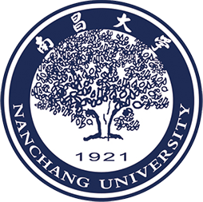

主案例 / AI AGENT
Avery
求职辅助 AI 工作空间
简历反复改、岗位到处存、投递难跟进。把分散的求职工作，连接为可复用、可确认、可追踪的任务流程。
- 我的职责
- 独立完成需求、PRD、原型与实现
- 案例重点
- Prompt、异常兜底与任务验收
自动播放 · 示例数据，用于展示任务流程。
个人作品集 / AI 产品实习方向
南昌大学 · 工商管理本科 · 2027 届毕业
围绕求职与知识问答场景，完成需求拆解、PRD、交互原型与 AI 工作流设计。
用 Avery 与 Agentic RAG，展示从产品方案到实现、测试和迭代的个人项目实践。
南昌大学 · 工商管理本科
2027 届毕业
从 0 到 1 的独立实践
Avery / Agentic RAG
我关心的产品问题
有用、可信、可持续迭代
两个项目，分别探索 AI 如何执行任务，以及如何基于证据回答问题。
求职辅助 AI 工作空间
简历反复改、岗位到处存、投递难跟进。把分散的求职工作，连接为可复用、可确认、可追踪的任务流程。
自动播放 · 示例数据，用于展示任务流程。
拆解用户场景与痛点，明确 MVP、优先级与验收条件，并形成可阅读的 PRD。
证据：Avery 需求与范围定义资料来源、模型与工具分工，设计确认、取消、失败与人工接管的交互逻辑。
证据：Prompt 与交互验收用历史评测 CSV 与 Python 示例说明指标口径，并结合 Trace 定位质量与执行问题。
证据：数据与分析报告范炜乾Fcalm

南昌大学工商管理本科2023 至今 · 2027 届毕业
我希望成为既能跨领域探索、又能在 AI 产品方向持续深耕的 T 型人才。对我来说，做产品是把想法和所学变成可使用的工具，让它们真正帮助到人。
求职时，改简历、刷岗位、填网申经常占用我一整天。Avery 从这些困扰出发：把重复工作交给 AI，让求职者把时间和精力留给学习与自我提升。
我曾考虑让 Avery 像 Code Agent 一样，通过通用文件操作和脚本完成任务。后来我选择收紧权限，把简历修改与表单填写封装为受控工具。面向不熟悉计算机的用户，需要先控制误操作风险，再讨论自动化能做多少。
工商管理带给我的两种方法，是从用户视角判断价值，以及用 PDCA 持续改进。我以开发、自测和复盘检查方案，再调整下一轮计划；下一步希望通过真实试用，验证这些设计是否对用户有用。
熟练使用 Figma，可快速创建原型；具备 Excel、SQL、Python 的基础使用与数据分析能力。
希望在 AI 产品实习中继续深耕需求、交互和验证，把个人项目实践带入真实业务。